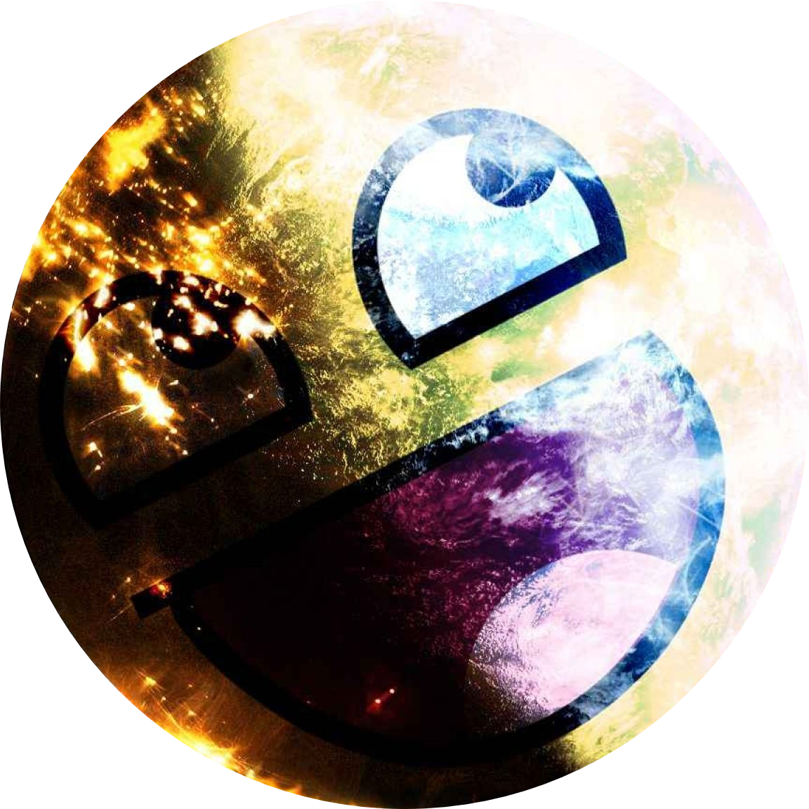

|  |
Gretio Valantino Tengker RumuatCollege student and Producer Music
Basssombar label
|
FL studio
Universitas Klabat Bachelor in Computer Science and Engineering
National Taiwan University of Science and Technology (NTUST)
Master in Computer Science and Engineering (Specialization: Fuzzy
Reasoning)
Advisor : Distinguished
Professor Shyi-Ming Chen, Ph.D
|
Department of Computer Science, Universitas Klabat
Lecturer and Researcher |
Airmadidi, Indonesia 2017 – Present |
|
Department of Computer Science and Information Engineering,
NTUST
Research Assistant at Fuzzy Information System laboratory |
Taipei, Taiwan 2015 – 2017 |
|
Universitas Klabat Head of Computer Laboratory |
Airmadidi, Indonesia 2010 – 2015 |
|
PT. Siwali Swantika
Software Engineer |
Jakarta, Indonesia 2009 – 2010 |
|